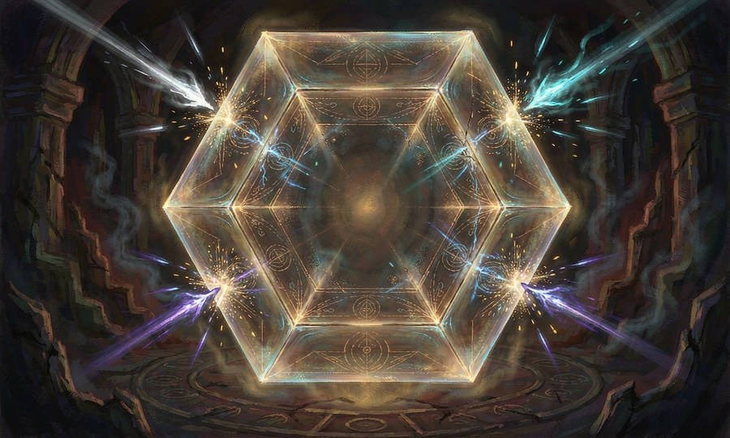

承受与转移伤害、结界防护与绝对安全区的创造。
契约·益契约·域契约·持契约·速契约·附契约·守契约·攻契约·界
茧
以丝将自身或他人裹入壳中，外界不可触及，壳内之人亦不能行动。此为护身，非为攻敌。
维持约15分钟至一小时，随阶级提升可延长。基础14 MP
技能树 · 0 → 7 阶 （每阶三选一）
契约·益契约·域契约·持契约·速契约·附契约·守契约·攻契约·界 7阶
契约·界绝对隔绝：全队隐身于茧中，外界无法侦测与攻击，直至你解除（最长 3 回合）；代价：反噬 3d6 + 透支 2 回合【每日 1 次】 契约·域为全队各结一层茧
6阶
契约·界万丝护壳：10m 内全队各获一层茧，可承受 4d6 伤害；代价：力竭 1 回合 契约·域茧可随你移动
虫蜕
受击之际蜕去一层皮，抵消该次伤害。蜕后极度虚弱，短时内不可再蜕。
维持一次性消耗，蜕皮后立即进入极度虚弱期。基础12 MP
技能树 · 0 → 7 阶 （每阶三选一）
契约·益契约·域契约·持契约·速契约·附契约·守契约·攻契约·界 7阶
契约·界不死之蜕：本场可将一次致命伤害抵消至 1d6，之后极度虚弱 3 回合；代价：反噬 3d6 + 透支 2 回合【每日 1 次】 契约·域全队共享一次集体蜕皮
6阶
契约·界九蜕：本场可抵消 3 次伤害，每次抵消后陷入 1 回合虚弱；代价：力竭 1 回合 契约·域全队各获一次蜕皮机会
4阶
契约·守蜕皮后对同类型伤害抗性：伤害减半 1 回合 契约·域可为 3 人各留一次
截断
于身前立起防御，将迎面而来的物理与能量攻击截停、偏折或消解。不能截停者径直穿透。
维持维持时间极短，但防御力极强。基础16 MP
技能树 · 0 → 7 阶 （每阶三选一）
契约·益契约·域契约·持契约·速契约·附契约·守契约·攻契约·界 7阶
契约·界绝对截断：本回合内全队各截停 3 次来袭攻击；代价：反噬 3d6 + 透支 2 回合【每日 1 次】 契约·域可截停整片战场的攻击
6阶
契约·界断界：3 回合内全队各可截停 2 次来袭攻击；代价：力竭 1 回合 契约·域为全队展开一道防线
囚徒
指定一人，其受伤时由己身代为承担，分量自定。代价皆由己身支付。
维持一次性作用，承伤比重可调节。基础18 MP
技能树 · 0 → 7 阶 （每阶三选一）
契约·益契约·域契约·持契约·速契约·附契约·守契约·攻契约·界 7阶
契约·益MP −55%，每日 1 次可完全抵消一次转移 契约·界罪囚：将一次致命伤害转移至自身，本次伤害减半；代价：反噬 3d6 + 透支 2 回合【每日 1 次】 契约·域全队伤害由你统一再分配
6阶
契约·界同命：本回合由你代为承担全队所受伤害，且每次转移消耗 4 MP；代价：力竭 1 回合 契约·域为全队建立链接
斥力
以自身为中心形成推力场，可弹开攻击、人与物件。愈近愈强。
维持持续存在，消耗随斥力强度增加。基础16 MP
技能树 · 0 → 7 阶 （每阶三选一）
契约·益契约·域契约·持契约·速契约·附契约·守契约·攻契约·界 7阶
契约·界绝对斥域：3 回合内外围来袭的物理攻击与契约魔法皆被排斥；代价：反噬 3d6 + 透支 2 回合【每日 1 次】 契约·域全队共享斥力场
6阶
契约·界斥力爆发：10m 内敌人全部击退并倒地，3d6；代价：力竭 1 回合 契约·域为全队展开斥力场
铁壁誓言
宣誓，获得极强防御。若违背誓言，则遭到强烈反噬。
维持誓言存续期间持续生效。基础14 MP
技能树 · 0 → 7 阶 （每阶三选一）
契约·益契约·域契约·持契约·速契约·附契约·守契约·攻契约·界 7阶
契约·界万誓之壁：誓约期间全队各获 8d6 誓言护盾，受击时护盾优先承受，违誓代价由你独自承担；代价：反噬 3d6 + 透支 2 回合【每日 1 次】 契约·域全队共立一誓，护盾叠加
6阶
契约·界铁誓：誓约期间全队各获 4d6 誓言护盾，持续 3 回合；代价：力竭 1 回合 契约·域全队共享誓言护盾